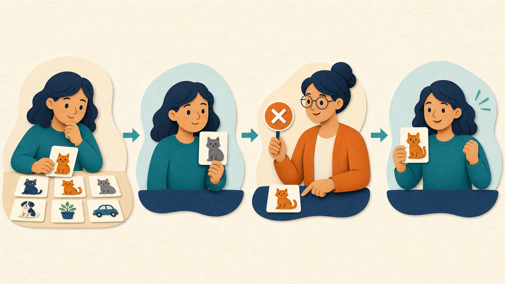

Collect examples
Use varied cat and non-cat images with correct labels.
Project 03 · Technical Learning Communication
Explaining a complex machine learning idea through examples, guesses, feedback, adjustment, and a familiar cat-recognition story.

Professional Relevance
This artifact demonstrates my ability to understand a technical concept, identify what a specific audience needs, and build an explanation that is accurate without being overwhelming. It also documents how generative AI output was evaluated, refined through prompting, and edited through human judgment.
The Simple Idea
It studies examples, makes guesses, receives feedback, and adjusts its connections when it makes mistakes.
Think of it like a student practicing the same kind of problem repeatedly. The student may be wrong at first, but each correction helps the student notice which details matter.

Everyday Analogy
At first, the learner has examples but no reliable rule. Each guess is compared with the correct answer. Repeated correction gradually improves which details the learner notices. A neural network follows a mathematical version of this cycle.
Learning Process
Use varied cat and non-cat images with correct labels.
Convert each image into numerical information the network can process.
Early layers respond to lines, colors, edges, and curves.
Later layers form ears, eyes, whiskers, faces, and larger shapes.
The output layer estimates whether the image contains a cat.
The prediction is compared with the correct label.
Internal weights change to reduce similar errors in the future.
Unseen images reveal whether the model learned patterns instead of memorizing.
Prompt Iteration
The first prompt requested a simple explanation, but the result remained too technical. Each revision added a clearer communication requirement.
Correct, but still broad and technical.
Add a cat example, everyday analogy, natural tone, and less jargon.
Clarify that the model learns mathematical patterns rather than human understanding.
Responsible Explanation
A neural network does not understand a cat as a person does. It performs mathematical transformations and learns statistical patterns from training data. Its performance depends on representative examples, careful evaluation, and how closely real-world inputs match the conditions it learned from.
Full Artifact
Review the complete explanation, prompt process, and concise discussion version.
Tool Disclosure